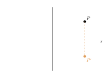
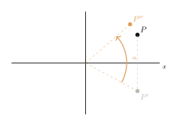
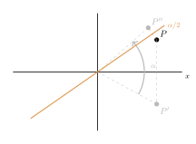

Aufgabe 4.6
Jetzt sind Sie dran: Erkunden Sie mit GeoGebra weitere Verkettungen und versuchen Sie bestimmte Regeln herauszufinden.
Beispiel: Was erhalten Sie wenn Sie eine Spiegelung an der x-Achse mit einer Drehung um den Ursprung um einen bestimmten Winkel $\alpha$ durchführen. Sehen Sie hier Bezüge zu den Erkenntnissen aus Abschnitt 3?
Womit anfangen? Fangen Sie mit einer Verkettung an, die Sie schon kennen, und zählen Sie mit.
- Aus wie vielen Spiegelungen besteht jede der beteiligten Abbildungen?
- Ist die Gesamtzahl gerade oder ungerade — und was folgt daraus?
- Bei welchen Verkettungen kommt es auf die Reihenfolge an?
Die Zählregel. Aus wie vielen Spiegelungen besteht was:
| Spiegelungen | Abbildung | Umlaufsinn |
| $0$ | Identität | bleibt |
| $1$ | Achsenspiegelung | kehrt um |
| $2$ | Drehung, Verschiebung | bleibt |
| $3$ | Schubspiegelung | kehrt um |
Verkettet man zwei Abbildungen, addieren sich ihre Spiegelungszahlen. Ist die Summe gerade, ist das Ergebnis gleichsinnig, also eine Drehung oder Verschiebung. Ist sie ungerade, ist es gegensinnig, also eine Spiegelung oder Schubspiegelung. Je zwei Spiegelungen an derselben Achse heben sich auf. Deshalb bleiben von vier nur zwei und von fünf nur drei übrig.
Schritt 1: das Beispiel aus der Fussnote, erst spiegeln

Zuerst wird an der $x$-Achse gespiegelt: $P$ geht nach $P'$. Das ist eine Spiegelung.
Schritt 2: dann drehen und zählen

Dann wird um den Ursprung um $\alpha$ gedreht: $P'$ geht nach $P''$. Eine Drehung besteht aus zwei Spiegelungen. Zusammen sind es drei, also ungerade, und zu erwarten ist etwas Gegensinniges. Weil der Ursprung bei beiden Abbildungen fest bleibt, kann es keine Schubspiegelung sein, denn die hat keinen Fixpunkt. Es muss eine Achsenspiegelung sein, mit einer Achse durch den Ursprung.
Schritt 3: die Achse ablesen

Beide Abbildungen erhalten den Abstand zum Ursprung, also ist $|OP| = |OP''|$. Der Ursprung liegt damit auf der Mittelsenkrechten von $\overline{PP''}$, und diese Gerade ist die gesuchte Achse. Sie schliesst mit der $x$-Achse den Winkel $\alpha/2$ ein.